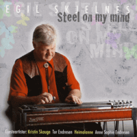

Egil Skjelnes - Steel On My Mind (Album, 2010)
01 - I Feel Like I'm Forgetting Something (3:27)
02 - Last Thing On My Mind (3:02)
03 - Time Has Come (2:35)
04 - Steel On My Mind (2:51)
05 - Jenny Dreamed Of Trains (5:22)
06 - Blizz (4:35)
07 - If You Love Me Let Me Know (3:33)
08 - Åleina Med Eit Glas (4:16)
09 - Emmelin (3:11)
10 - Down And Out (3:31)
11 - Medley (Tracy's Waltz / Tom's Waltz / Waltz of Roses / Neosho Waltz) (4:47)
12 - True Blue Fool (3:00)
13 - Sondre's Waltz (2:56)
14 - Worlds Apart (5:10)
15 - Eirin's Rocking Rock-A-Bye (1:57)
16 - Back Roads (4:09)
17 - Jenny Dreamed Of Trains (Radio Mix) (4:30)
© Rocade Records :: [RRCD 0019]
Notes
Review
170/366 (Project 366)
Topnotch work from great Norwegian musician Egil Skjelnes. Country sound, Honky Tonk, Folk, Pop, Rock and general lovely tunes. Album feautring a lot of amazing musicians and people. Perfect instrumentals, wonderful songs with vocals, traditional and modern ways to perform compositions - all is great! And, of course, steel guitar on mind.